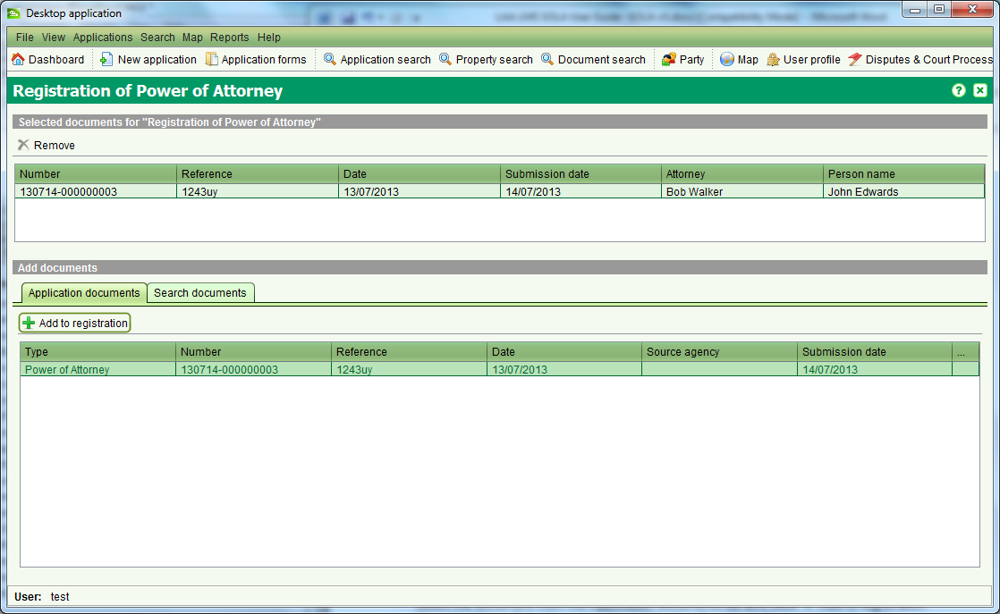
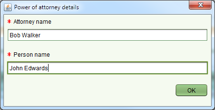

Before accessing the Document Registration screen, add the document to register to the application so that it will appear in the Application documents list. To register a document, select the document from the Application documents list and click
Certain document types, specifically Power of Attorney and Notarial Bonds must first be registered in SOLA before they can be referenced by an application to support or justify a property transaction. The Document Registration screen lets you register these official documents as well as deregister them once they are revoked / cancelled. To access the Document Registration screen you need to lodge an application containing one of the following services:

Before accessing the Document Registration screen, add the document to register
to the application so that it will appear in the Application documents list. To
register a document, select the document from the Application documents list and click
 Add to registration. You can add multiple documents for registration if required.
If you mistakenly add a document to the registration list you can remove it using
Add to registration. You can add multiple documents for registration if required.
If you mistakenly add a document to the registration list you can remove it using
 Remove.
Remove.
When adding a Power of Attorney document for registration, you will also be prompted to enter the Attorney name as well as the name of the person the Power of Attorney applies to (i.e. the Grantor).

Also See